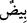

İbn Şeyh Havâşî’sinde der ki: Burada “__WORD__ ifâdesi, “__WORD__ kelimesinin üçüncü
sıfatı da olabilir. Bu sefer “__WORD__ kelimesinin zamiri “__WORD__ kelimesine râci olur. Bu
durumda “__WORD__ ifâdesi, “__WORD__ ve “__WORD__ kelimelerinin te’kidi olur. Yolların
değişik renklerde olması ise bir kısmının beyaz bir kısmının kırmızı oluşuyladır. Buna
göre bütün yollar beyaz ve kırmızı olarak iki renkte olur. Ancak bulundukları mahallin
çokluğu itibarıyla her biri çoğaldığı için “__WORD__ şeklinde çoğul olarak tabir edilmiştir.
Fakir (Bursevî) der ki, hac yolunda Arap ülkelerini ve daha başka yerleri müşâhede
edenler bütün bu kısımları görürler. Bütün bu yerler ve yollar hep çeşit çeşit, türlü
türlü, ve rengarenktir.
Yine İbn Şeyh Havâşî’sinde der ki: “simsiyah yollar” ifâdesi, “__WORD__ kelimesine
matuftur. Bu da yine yollara dâir ve yollarla kâim olan beyazlık ve kırmızılık gibi
niteliklere dair detay mâlûmat kabilindendir. Sanki “dağlardan beyaz, kırmızı ve
simsiyah yolları olan dağlar yaptık” denilmektedir. Burada siyah olanın “__WORD__ ile
nitelendirilmesinden bilinmiştir ki siyah da açık-koyu diye bir ton değişikliği
olmadığından değişikliği ifâde eden cümle ortaya getirilmiştir. “__WORD__ kelimesinin “__WORD__ kelimesine mâtuf olması da mümkündür. Bu durumda “__WORD__ kelimesi “__WORD__ ifâdesinin
açılımı olmayıp bilakis onun alternatifi olur. Sanki “dağlardan değişik renkli yollar ve
yine dağlardan tek renk üzere simsiyah yollar yaptık” denilmiştir. Buna göre âyetten
maksad farklı meyveler olduğu gibi ya dağların yollarının değişik değişik renklerde
olduğunu beyan etmektir –ki sen uzaktan dağ yollarını beyaz, kırmızı ve siyah yollar
olarak görürsün- yahut bizzat dağların kendilerinin rengarenk oluşlarını beyandır.
Bunlardan her biri yüce kudrete delâlet eden eserlerdendir.
“__WORD__ ismi, “__WORD__ kelimesinin çoğuludur. “__WORD__ kelimesi “__WORD__ gibidir. “__WORD__ denilir ki “karga gibi simsiyah” demektir.
Yine “__WORD__, “__WORD__ ve “__WORD__ denilir ki mânâları “sapsarı, bembeyaz ve
kıpkırmızı” demektir.
Kurtubî’de kaydedilen bir hadiste şöyle vârid olmuştur: “Allah Şeyh-i Gırbîb’e (yâni
saçını siyaha boyayan yaşlıya) buğz eder.”[76] Makâsıd-i Hasene’de ise “Allah
yaşlılık ve ihtiyarlık alâmeti olan beyazı yok edene buğz eder” şeklinde kaydedilmiştir.
28. İnsanlardan, hayvanlardan ve davarlardan da yine böyle türlü renkte olanlar